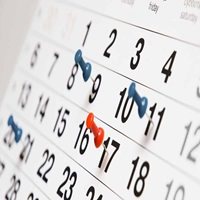

Schedule Helper
Managing Your Schedule
Learning to manage your schedule effectively is a crucial skill for success. By prioritizing tasks and setting clear goals, you can make the most of your time. Utilizing tools like calendars and to-do lists can help keep you organized. Remember to also allocate time for rest and relaxation to maintain a healthy balance.

Here are some tips for managing your schedule:
| Tip | Description | Date |
|---|---|---|
| Set Clear Goals | Define what you want to accomplish and break it down into smaller tasks. | 10/10/2025 |
| Use a Calendar | Keep track of important dates and deadlines to stay organized. | 10/11/2025 |
| Create To-Do Lists | Write down tasks and prioritize them to ensure you stay on track. | 10/12/2025 |
| Allocate Time for Rest | Make sure to take breaks and relax to avoid burnout. | 10/13/2025 |